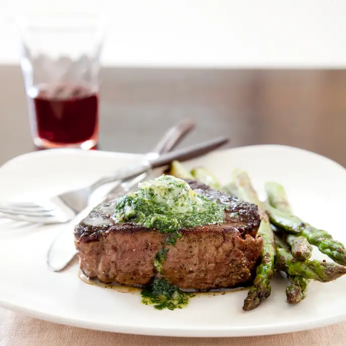

Pan-Roasted Filets Mignons with Asparagus and Garlic-Herb Butter for Two

Description
This method of preparing filets mignons ensures a deeply browned, crusty exterior and a tender, juicy, and rosy interior every time!
Ingredients
- 3 tablespoons unsalted butter, softened
- 2 teaspoons minced fresh tarragon
- 2 teaspoons minced fresh parsley
- 1 garlic clove, minced
- Salt and pepper
- 2 (6- to 8-ounce) center-cut filets mignons, 1½ inches thick, trimmed
- 2 teaspoons vegetable oil
- 1 pound asparagus, trimmed
Steps
- Adjust oven rack to lower-middle position, place rimmed baking sheet on rack, and heat oven to 425 degrees. Combine 2 tablespoons butter, tarragon, parsley, garlic, ⅛ teaspoon salt, and ⅛ teaspoon pepper in bowl; set aside.
- Pat steaks dry with paper towels and season with salt and pepper. Tie kitchen twine around middles of steaks. Heat oil in 10-inch skillet over medium-high heat until just smoking. Carefully place steaks in skillet and cook until well browned on both sides, about 6 minutes, flipping halfway through cooking.
- Transfer steaks to baking sheet and bake until steaks register 120 to 125 degrees (for medium-rare), 10 to 15 minutes. Transfer steaks to plate, tent loosely with aluminum foil, and let rest for 5 minutes. Discard twine.
- Meanwhile, melt remaining 1 tablespoon butter in now-empty skillet over medium heat. Add asparagus to skillet, arranging spears so that half of tips point in one direction and other half point in opposite direction. Cover and cook until asparagus is bright green and almost tender, 3 to 5 minutes.
- Remove cover and season with salt and pepper. Increase heat to medium-high and continue to cook, turning spears, until spears are tender and well browned, 3 to 7 minutes. Transfer to platter. Evenly spoon garlic-herb butter over each steak and serve.